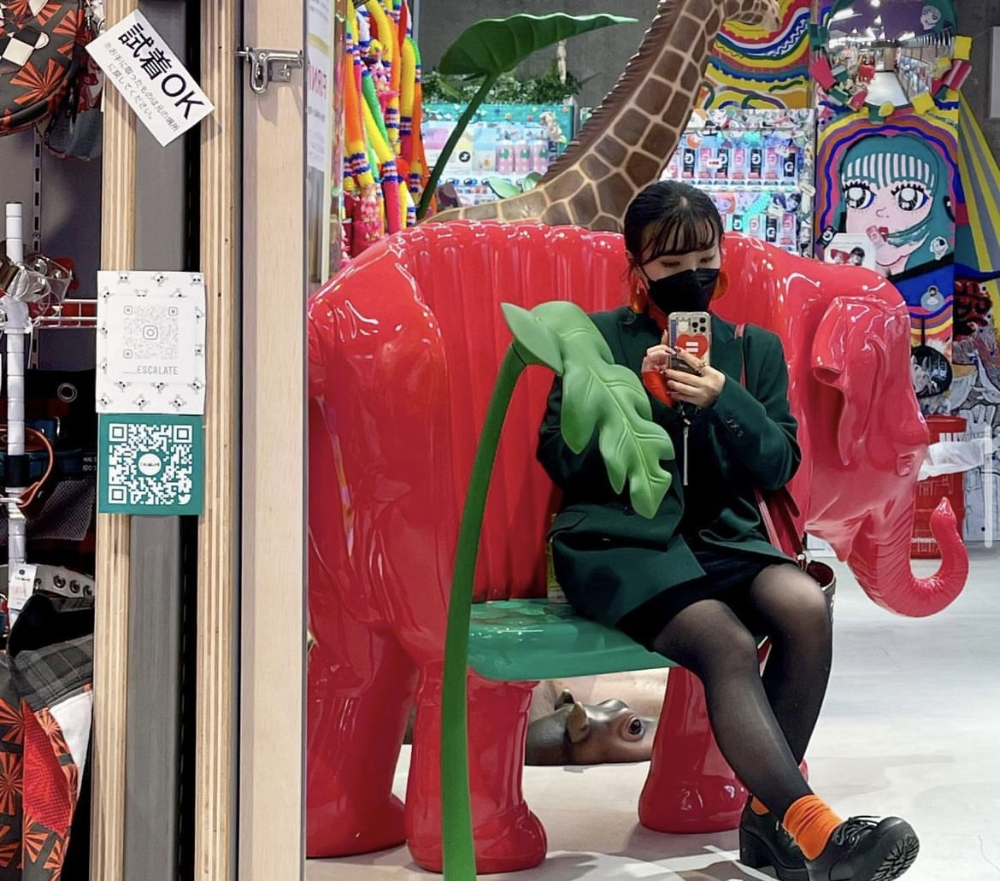

past
_____________________________________________________________________________________________________Q デザインに目覚めたきっかけを教えてください
「ちゃお」という付録漫画がきっかけです。 当時ちゃおがすごい流行ってたんですよ。最初全然書けなくて、写し絵とかから初めました。 クラスにすごい上手な子がいて、自分もその子と同じように上手くなりたいと毎日、なにか描いていてそれが気づいた好きになっていたみたいな感じです。
それで何か絵を書く系のことが仕事にできるんじゃないかなと何となく小学生ぐらいの時に思ってたのが始まりで、 高校受験が自分の中で進路を考える一番最初のきっかけになるタイミングじゃないですか。 そこで、美術を専門にできる学科があるってことを初めて知って、その道に進もうと思って進学したのが、今の道に繋がる第一歩ですね。
Q 美大受験のエピソードを聞かせてください。
紆余曲折あって一浪しているんですけど、 最初私立はがちょっとお金高いからいけないよと言われてたので公立の大学を受験してて、金沢に美術大学が1個あって、金沢美術工芸大学だとかを受けたんですけど、現役の時に落ちてしまって、 浪人のときは一浪しかできないからすべりどめでもいいから私立を受けなさいっていうふうに言われて個人的には多摩美に行きたかったんですよ。 多摩美って先生が多くて大貫先生とか服部先生とか沢田先生とか上田先生とか居て、私はやっぱり先生の授業がどうしても取りたくて 申し訳ないんだけど親には多摩美を第1志望でってことで他の大学もあわせて受けたんだけど、最終的に多摩美しか受からなかったので、多摩美に行く選択になりました。受験対策として浪人のときはもう学校卒業してるので、1年間だけ名古屋の美術予備校に通ってました。
Q どんな大学生活を送られていましたか？
課題にひたすら追われていました。 課題の量が他大学と比べて、めちゃくちゃ多いんですよ。 特に2年生の時が、一番つらくて結構泣きながらからやってるみたいなのが多かったんですけど、大体1ヶ月か2ヶ月スパンでそれが出されるんですけど、その同時進行でやらなきゃいけない課題が10個とかになっちゃうときがあって そこにプラス学科試験とか、定期でテスト入ってくるじゃないですか。一緒にやらなきゃいけないので。何やってたか思い出せないぐらい忙しい日々でした。
ちゃんと全部やらないと、落単して次の年に進めなくなっちゃうので、遅れてでもいいからとにかく出しなさいっていう教育方針でした笑
Q では、就活の話を聞かせてください。 今の会社に決めた理由は何ですか？
私が高校2年生の特に、「メディアコスモス」という大きな市立図書館が岐阜県にできて、 そこのサインを担当したのがうちの会社の原研哉さんっていうデザイナーの方で、 デザインっていう仕事って建物のサインとか、どうやったら空間でみんなが気持ちよく過ごすことができるんだろうかっていうところまで考えられていることを初めて知って、 原さんが関わった図書館なので、日本デザインセンターに関する本がたくさんあって、それを読んで 何かこの会社の考え方面白いなと思って、いつかの会社で働けたらっていうふうに思って目指したってのがきっかけです。
一発で受かると思ってなかったので、中途採用での入社を考えて他の会社も受けていました。 3年後に今の会社への転職をメージして、別の会社でも、今の会社と同じようにキャリアアップできるような会社を探して受けていました。
最終的にでも行きたかった会社から内定を頂けたので、他はお断りして今の会社に入社したっていう感じになります。
now
_____________________________________________________________________________________________________Q 今はどんなお仕事をされていますか？
パッケージや車とか建物のサインとか会社のロゴデザインやブランディングみたいなことを幅広やっています。
原さんの元で働きたかったっていうのと、私も幅広くデザインをやりたくて受けたんですけど、 この会社の新卒はこの部署に入りたいですっていうふうに受けることができないんですよ。 部署配置は会社が振り分けるスタイルで入社式であなたはここの部署に行ってくださいって言われるんです。 なので、正直そんなパッケージデザインは実はあまり興味なくて、 原さんが図書館デザインに携わったみたいに、サインやロゴデザインとかをやりたかったんですけど 今いる部署に配属されたので、とりあえずはあのもらってる仕事頑張ってるって感じです。
Q 自分が望む仕事ではない場合、どのようにモチベを保っていますか？
最初は会社側が配属先を決めますが、新卒は異動することができるんですよ。 一応3年ごとと言われてるんですけども、本人の希望と部署の空きが一致すれば、希望していけるっていうふうに言われています。 本当に入りたかった会社ではあるので、やめるわけいかなくて、 今2年目なので来年か、遅くても3年後には移動できるだろうと言われてはいるので、そこが希望ですね。
それまでには、社会人として大切な、メールの打ち返し方や電話対応など基本的なことを身につけて、 自分が希望する部署が激務って言われてるのでそこに行ったときに、 へこたれない基礎力を今つけているっていうふうに自分に言い聞かせてます。
Q これまでの仕事の中で印象的なお仕事は何ですか？
まだオープンしていないので、詳細は言えないのですが とある商業施設のサインの仕事でトイレなどのピクトグラムを作りました。
パッケージとかは、サイクルが早くて1年ぐらいでリニューアルしちゃうので自分がデザインしたものがなくなっちゃうってことがあるんですけど、 サインって半永久的に残るじゃないですか。 しかも自分はその図書館のサインを見てこの会社に入ってきたので、何か作ったものが誰かの生活に寄り添うことになるんだっていうのがすごい嬉しかったです。
Q インスピレーションを受けるために普段意識していることはありますか？
クライアントワーク中心なので、結構指示が細かく決まっているので事をしなきゃいけないので、インスピレーションとかは今やってる案件ではあまり使わないかもしれないんですけど クライアントワーク以外の仕事をやっている人とか見る限りは 外に出てリサーチしてみたり、デザイン展覧会とかギャラリーがよく開催されているので、社内で情報共有してみたりとか、そういうところから拾ってはいるのかなって感じですね。
自分の好きなものは、世の中にとっては良いとは限らないので、お受け取り手の人から見て、何かどう感じられるだろうか、 その中で何か、自分ができるオリジナリティとか表現したいことって何だろうって考えているって感じですね。
Q クライアントワークをしていく中で、 意識していることや気をつけていることありますか？
クライアント側はデザイナーさんではなく、一般的な仕事されてる方々なので、 社内デザイナー同士だったら通じる会話も通じなかったりするんですよ。それは専門用語とかだったりもするし、感覚でやっている部分があるので きちんと言語化して、相手に伝わるように伝えることを意識しています、
そこの齟齬があるとやっぱりどうしてもうまく仕事が進まなかったりするので、できるだけ同じ方向を向いてもらえるように、言語化をきちんとしてる人が多い気がします。
Q 言語化力を上げる方法などあればお聞きしたいです。
私も今それを勉強中なので、何かこれがあるっていうは言えないんですけど、 先輩にアドバイスもらったことがあるのは、 「難しい言葉を使わずに、優しい言葉で伝えられるように。 どこかから借りてきた言葉なんじゃなくて、ちゃんと自分で考えた自分の言葉で伝えることが大事だよ」というふうに言われたことがあります。
future
_____________________________________________________________________________________________________Q 今後のキャリアビジョンなどありますか？
まずは、原さんの研究室(部署)に入ることが第一目標です。 いつかは独立したいですけど、まだ何も勉強できないと思っていて、 よく言われるのはデザイナーは35歳から本番だって。やっぱり10年は下積みしないとなとは思っています。 結構自分の好きなデザイナーさんとか今活躍されてるデザイナーは、10年ぐらいをやっぱりめどに、ずっと独立してる人が多いので、40までにはしたいと思うけど、 まだ全然その土壌面を育ててないので、とりあえずは今の勉強を頑張りたいって感じです。
Q 最後にデザイナー志望の方や後輩デザイナーにアドバイスやメッセージお願いいたします！
会社入ったときに名刺もらうんですけど、名刺に役職：デザイナーと書かれて それを見て泣きそうになったんですけど、 好きだからやっていたら何か先に道が見えてきて進んでみようみたいな感じでとにかくやる目の前のことをやるっていうふうにして進んできたし 今の会社も受けるか受けないか迷ってたけど、第2新卒までしか基本どこも受け付けてないので、第2新卒ってなると2年しか応募できる猶予がないじゃないですか。 チャンスに買いしかないんだったら受ければいいじゃんみたいなのになったので、
何か迷ってる暇があるんだったらでも、好きって思えるんだったら、進んでみればいいし、何か駄目だったら駄目だったそこでやりきったって気持ちを持ってその後の人生多分進んでいけるから、 何か諦めない方がいいんじゃないって感じがします。
なんかできないと思っててもできるかもしれないし。 その方が、その後の何か自分の人生にあのときやっておけばよかったとか後悔はないと思います！